ある日、ふと書店で見つけた一冊の本。面白そうなタイトルだったので夏のヴァカンス中に読んでみようと購入。すると実に興味深いお話がたくさん。パリに住んでいて、今までなんとなく気になっていたことをスパッと解決してくれました。それはパリの中に潜む中世の姿。そう、パリの街中で見かけた奇妙な場所が実はものすごい歴史のある遺跡だった！
その時代はフィリップ・オーギュストと呼ばれる王がフランスを支配していた中世にさかのぼります。
まず旅を楽しむためには歴史から。
カペー朝（dynastie des Capétiens 987年~1328年）
世界史を勉強された方なら懐かしい名前かもしれませんね。もともと西フランク王国が存在し、987年に西フランク王ロベール1世の孫に当たるパリ伯ユー グ・カペーがフランス王になりカペー朝が始まります。その領土はパリ周辺の小さな地域で王の権力はまだ弱く、12世紀前半のルイ6世から王権の強化が開始されます。1180年には、ルイ7世の子、フィリップ2世がフランス・カペー朝第7代王となり、さまざまな活躍を見せます。一番大きな功績 としてはイギリスの大陸領土をフランス領土へと回復したこと。当時イギリスのノルマンディー地方からの侵略が脅威として懸念されており、その防御策として築かれたのがパリを囲む城壁。そうこれが旅の目的となるテーマです。
またフィリップ2世はパリの整備をはじめ、パリ大学の創立への協力、ノートルダム建設の継続など内政にも力を注ぎフランス王国の礎を築いていきます。そしてこれらの業績を評価され、初代ローマ皇帝アウグストゥスにちなんで尊厳王（Augusute)と呼ばれるようになりました。
ちなみに、この初代ローマ皇帝アウグストゥスの名前から8月の英語名Augustがつくられました。それまで8月は30日までだったのが彼によって31日に増やされたんだそうです。今の子供たちの夏休みは彼のおかげで1日分長くなったということですね（偉大な業績です！）。
1223年7月14日にフィリップ2世は亡くなり、歴代王の眠るサン・ドニ大聖堂に埋葬。その後、ルイ8世（獅子王）、ルイ9世（Saint-Louisサン・ ルイと呼ばれアメリカのセイントルイスの名前の由来に）、フィリップ3世（大胆王）、フィリップ4世（端麗王）、ルイ10世、フィリップ5世、シャルル4 世と続きカペー朝が終わります。 （以上参考ウィキペディアより）
では、ここからこのフィリップ2世尊厳王のパリ城壁探検へ（右岸編）。
まず、パリ4区にあるHotel de Ville（パリ市庁舎）へ。そうこの辺りはよく訪れる地域で（BHVへのお買い物）、前からずっと気になっていた通りがありました。ちょうどこの市庁舎 の裏手に教会（St,Gervais-St,Protais）があり、この教会の裏道がなんだか他の景色と比べてちょっと違うんです。Rue des Barres（柵通り/柵で囲まれていた地域）と呼ばれ、通り自体短くて人もまばらなのですが、そこだけ石畳で古い時代を感じさせます。 カペー朝の王たちがここから市壁を築いたと伝えられているそうです。春になると小さな植え込みにある花々がとてもきれいで、途中にある少し広いスペースに は小さなお店が何件か。「フランスお土産スイーツ」のページでも紹介 している教会が作ったBIO食品のお店もここにあります。その名もProduits des Monasteres。セーヌ川沿いにはおしゃれなカフェやレストランが数件軒を並べいます。
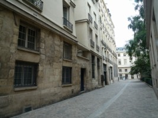
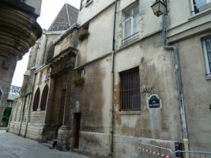
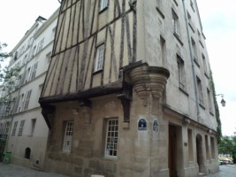
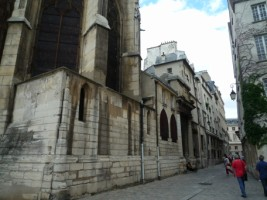
Rue des Barresを抜けたら、左に曲がり世界各国からの芸術家が集まるCite International Des Arts（国際芸術都市/パリで見つけた芸術のページで紹介しています）を過ぎます。すると目の前にまた歴史のありそうな建物が現れます。城壁とは関係ないのですが、ちょっと立ち寄ってみました。
この建物はHotel de Sensサンスの館と呼ばれ、当時パリはサンス大司教区に属しており、Sens（サンス/パリ南東に位 置する町）の大司教によって所有されていました（1475年~1570年に建設）。建物自体は後期ゴシックと初期のルネッサンススタイルの間に当たり、現在はForney art library（芸術・産業技術の専門図書館）となっています。パリに残る3つの中世私宅の一つだそうです。
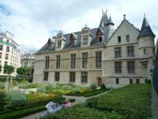
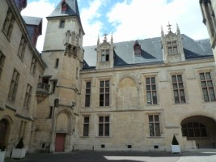
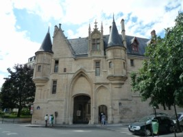
建物の裏は小さな公園になっており、ここでちょっと休憩をとってもよさそう。
さらにHotel de Sensの前の通りを渡り、お隣Lycee Charlemagneリセ・シャルマーニュへ。
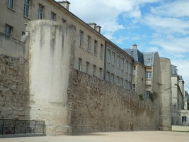
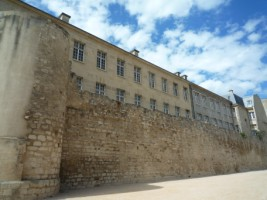
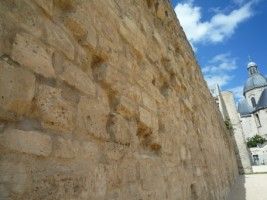
この城壁の姿が視界に現れたときには、主人も私も感動！こんなところにこんな遺跡が残っていたなんて・・・と。壁の向こうがリセで、城壁をはさんでこちら側はグラウンドになっていました。二つの塔も確認できますね。

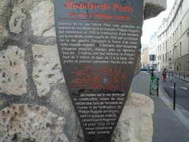
奥の方の塔に近づいてみると、その向こうは普通の道路。昔はここにそびえたつ塔があったんだなあと思いながら空を仰いでみます。
パネルには、『十字軍遠征中パリの防衛が手薄になるのを心配し1190年にフィリップ・オーギュストが右岸に城壁の建設を開始させた。1200年からは続いて右岸の工事も開始。』とあります。
さらに進み、この通りのすぐそばにあるRue Francois Miron（フランソワ・ミロン通り）へ向かいます。すると11 番、13番地にこれまた雰囲気の違う建物が現れてきます（城壁には関係ありませんが）。15世紀の建物だそうです。
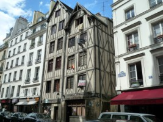

こんな歴史のある館ですが、一つの部屋がVendu（売却）とありました。そしてその下の部屋を見るとLouer（賃貸）とサインが上がっていました。 うーん、どんな人が住んでいるんだろう・・・。
Hotel de ville へ戻り今度はここから北上しArchivies Nationales（国立古文書館）を目指します。通りでいうとRue des Francs Bourgeois。古文書館の入り口正面に着いたら後ろを振り返ってみましょう。そうすると通りの向こうに立つ建物の隙間からひょっこりものすごい建築物が目に入ってきます（かなり感動）。フィリップ2世時代の塔の一部です。
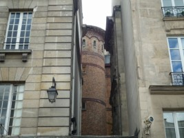
振り返った瞬間、私も主人も大感動！！！
そしてずっと気になっていた場所がもう一つ。Rue des Francs BourgeoisをChatelet Les Halles方向にまっすぐ歩いて行きます。途中から通りの名前がRue Rambuteauとなり、その通りがRue du Louvreにぶつかったら左折します。Rue du Louvre 13番地には城壁の痕跡が！
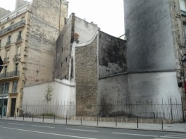
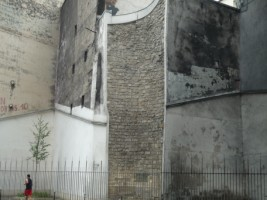
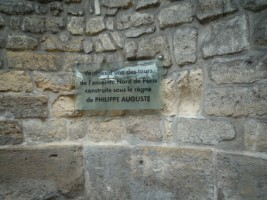
右の写真、PHILIPPE AUGUSTEフィリップ・オーギュストの文字が見えるでしょうか。平凡な通りの上に古い建物がいくつか並び、その中央に位置するえぐりとられたような形をしている建物。ここに塔が昔あったということを示しています。
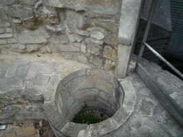
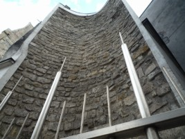
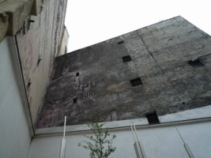
ここに塔がそびえ立っていたんでしょうね。今は柵に囲まれて保護されています。お隣の建物の壁には古い広告の跡が残っており、こちらは主人が興味を示していました（右写真/余談）。
そして最後に、ルーブル美術館。訪れた方ならご存知だと思いますが、シュリー翼入り口をまっすぐ進むと中世の要塞が現れます。こちら もフィリップ2世時代の城壁の一部です。中世時代のルーブルはパリを守る要塞の一部としてつくられ、建物の中は武器や兵士の宿舎、あるいは牢獄として機能 していたそうです。結局イギリスからの攻撃は受けなかったそうですが。
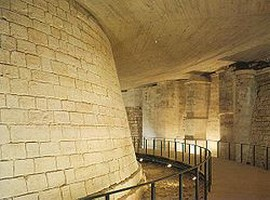
（こちらのイメージはウィキペディアより）
さて最後になりましたが、私が参考にしたお薦めの一冊をご紹介しましょう。
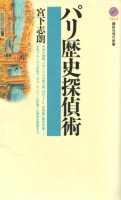
パリ歴史探偵術 著/宮下史朗 講談社現代新書
歴史好きな方はもちろん、パリをちょっと違った角度から見てみたいという方におススメ。とても興味深いお話がたくさん詰まっています。パリを訪れる前に読 んでみてはいかがでしょうか。きっと旅のヒントが生まれますよ。
普段何にも知らずに通り過ぎていた場所が、今はとても貴重な空間に思えてきます。「知る」ということはこんなにも生活を豊かにしてくれるんだなあと改めて感じました。そう、パリはエッフェル塔や凱旋門だけではないのです。町の隅々にまで歴史が詰まっているのです！
続きはセーヌ左岸に渡り歴史探索です。フィリップ・オーギュストのパリ（左岸編）へ
パリ4区関連ページ：パリ4区マレ地区のおススメ